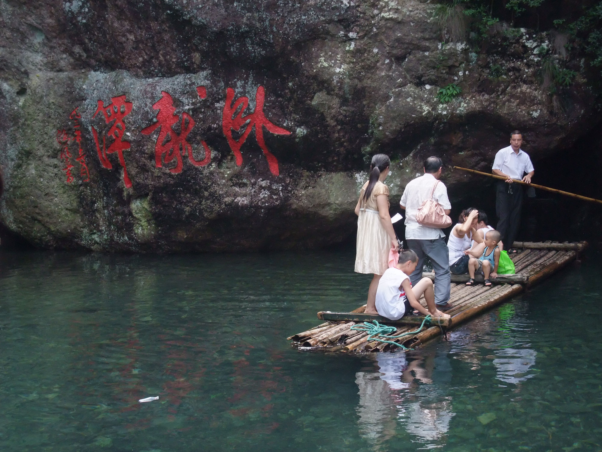
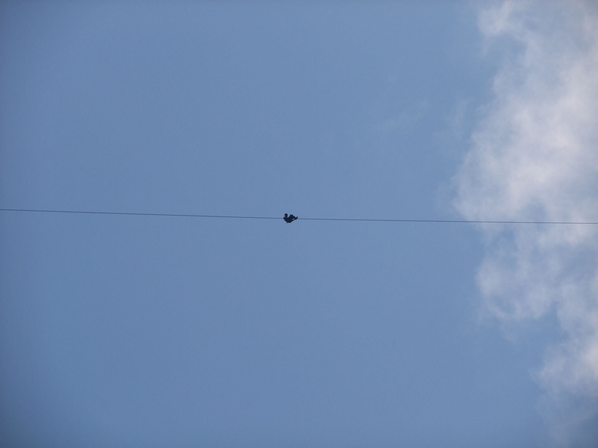

发信人: railfan (乐在骑中·善良的人?), 信区: outdoor
标 题: 三个人的雁荡山之行(转载)
发信站: 饮水思源 (2010年08月08日08:21:32 星期天)
【 以下文字转载自 bicycle 讨论区 】
【 原文由 Journer 所发表 】
献给同行的青蛙和小龙
前言：一个是憋的慌想要骑车自虐，另一个是一直向往去山野中爬坡，却未能成行，还有
一个是实验室的宅男想要出去锻炼锻炼看看风景，于是三个人就这样在这酷暑的天气，“
走到了一起”。
雁荡山地处浙南，海拔1千米，“因山顶有湖，芦苇茂密，结草为荡，南归秋雁多宿于此，
故名雁荡”。一遭走下来，感觉算得上浙江山区很有代表性的风景了，青山绿水，四处散
步着农家和田园，加上地处山上，植被荫凉，就算是炎炎夏日也不觉得热（阳光直射除外
__）。一路上柏油路修的很好，另有楠溪江景区庇临（需翻山），算得上骑车旅行的好去
处。
Day 1
上海南站—（动车）—台州站（黄岩北）—（夜骑）—台州市路桥区
Day 2
台州市路桥区——泽国镇——大溪镇——望雁路（下G104国道）
台州段的G104让人相当不愉快，堆满碎石，沙子等的卡车，减速板，而路两旁就是居民区
，还有堆着机床的商店，修车铺……路况可想而知。建议如果想去雁荡山，不要走台州的
这段G104，而是直接动车到雁荡山，或者可以考虑上甬台温高速。
白芙线——雁荡山灵峰景区——雁荡山灵岩景区——雁荡山雁湖景区——丹雁线——白雁
线——楠溪江石桅岩景区
注：白芙线为贯穿雁荡山景区唯一的一条路，沿这条路走可以经过几乎所有的著名景点。
1、大溪镇至望雁路为21km，其中有5km左右的山路。
这里我们遇到一位四十岁左右的蹬三轮车的阿姨，车上还装满了西瓜，买完西瓜询问一番
后，我们立即对此阿姨佩服得五体投地——她就是骑着装满西瓜的菜三轮爬上刚才的山坡
的！原来真正的爬坡王就在朴实的劳动人民之中。
2、从灵峰景区至石桅岩景区为40km的山路（连绵不断的上坡与下坡）。
坐骑：
screen.width - 200){this.width = screen.width - 200}">
灵峰“天桥”：
screen.width - 200){this.width = screen.width - 200}">
方洞景区，一路往上爬到500米高的景区停车场，发现前面是军事警戒区，只好原路折回：

白芙线行至“丹灶里村”时右转，上白雁线，远离雁荡山景区而奔向楠溪江。上白雁线的
前三公里为平缓的田园间小路，这段恬静的小路在下午三点时候骑起来异常舒适，可作为
爬坡前最后的放松。接着就是绵绵无绝期的上坡……其中滋味唯有各位亲自来体验了。而
且除了青蛙的食盐配橙汁颗粒和一路山泉水，我们没有带其它的补给，不过事实证明盐水
还是很管用的。
艰难登顶：

接下来是很high的下山，这里就感觉到碟刹的优势，以前公路V刹下山时手都会酸到不行。
我下山不敢冲的太快，青蛙则飞速冲在前面。
这时已经下午5点了，当我们离开雁荡山，期待着进入楠溪江时，又看到前面绵延不绝的上
山路！这下比较崩溃，青蛙有点骑不动了，而我肚子很饿，于是决定就地拦车。青蛙坐在
路边做中暑的痛苦状，我去拦车求救。苦苦等待差不多十分钟后，一辆微型面包车停下来
。我跟司机道明缘由，青蛙立马起身开始跟司机一番解释，一旁我看着觉得“好假”^^。
坐上面包，发现其实前面的上坡并不长，仔细想想刚才的下坡都还没到底，所以至少在这
里不太可能再有很高的上坡，不过我们的勇气确实被这一吓吓跑了。司机把我们载到过了
这个爬坡点的最近的一个村子，车上另一个极度热心助人的谢大叔拉我们到他家里喝八宝
粥，我们顺便吃了点冷饭咸菜，心中的感动溢于言表。
离开谢大叔家后，再没有遇到大的上坡，我们一路迎着夕阳下缓坡到了楠溪江。
雁荡山的海拔不算高，不过反思这一天的爬坡，我感觉爬的非常辛苦，山地重是原因，无
锁鞋是原因，不过让我觉得最痛苦的是连续的上下坡交替：_-`-_-~~~，这个滋味最难受了
。
Day 3
楠溪江石桅岩景区——白雁线——白芙线——雁荡山雁湖景区——雁荡山灵岩景区——雁
荡镇玉溪村
今天的路线是沿着昨天的下坡重新爬回去，不过今天变成我们虐坡而不是坡虐我们了。路
程不到一个小时，便再一次登顶。
石帷岩：
screen.width - 200){this.width = screen.width - 200}">
我们在这里高声歌唱，青蛙是男高音哈：
screen.width - 200){this.width = screen.width - 200}">
我的中轴挂了：
screen.width - 200){this.width = screen.width - 200}">
今天的太阳很晒：
screen.width - 200){this.width = screen.width - 200}">
绝壁之花：
screen.width - 200){this.width = screen.width - 200}">
开山：
screen.width - 200){this.width = screen.width - 200}">
水堤：
screen.width - 200){this.width = screen.width - 200}">
养鸭场：

游灵岩景区
野路子进景区，“折价”导游：
screen.width - 200){this.width = screen.width - 200}">
小龙湫，忍不住进去泡脚，这里的水很销魂：
screen.width - 200){this.width = screen.width - 200}">
水自甘人不用糖，茶能醉人何需酒，这话放在雁荡山上是真的：
screen.width - 200){this.width = screen.width - 200}">
神雕侠侣的取景地，这是个意外的收获：
screen.width - 200){this.width = screen.width - 200}">
第一次记住神雕还很小，当时是因为胡兵的那一首“归去来”，还有我觉得非常pp的龙姑
姑。后来看过新版的神雕，里面的画面美不胜收。也看了金庸的原著，愈发觉得故事很精
彩。
十六年后相聚……
screen.width - 200){this.width = screen.width - 200}">
古墓深潭：
 screen.width - 200){this.width = screen.width - 200}">
进潭发现里面就是闭室一间，好吧，戏都是假的：（正对出口）
screen.width - 200){this.width = screen.width - 200}">
徒步石阶路上山，遂至宁静深幽的“觉性禅院”，经历艰辛爬到山顶无意之中发现这游人
罕至的禅院，真是一种奇妙的感觉：

灵岩的空中杂技：滑钢索，
 screen.width - 200){this.width = screen.width - 200}">
晚上九点与自虐了两天多的小龙碰面，一起在镇子上住下，三个男人挤在两张床上夜谈许
久，感慨中睡去……
Day 4
游大龙湫景区
screen.width - 200){this.width = screen.width - 200}">
全景，正面照，徐霞客曾来此考察
screen.width - 200){this.width = screen.width - 200}">
背面照
screen.width - 200){this.width = screen.width - 200}">
从上往下（可以看到镜头上的彩虹）
screen.width - 200){this.width = screen.width - 200}">
享受大龙湫的清凉，就差脱掉下去游泳了：


screen.width - 200){this.width = screen.width - 200}">
徒步攀岩
大龙湫景区就这一个看点，不过我们又找了一个野路（多亏小龙眼睛敏锐）
screen.width - 200){this.width = screen.width - 200}">
这一堆乱石像是遗留的泥石流痕迹：
screen.width - 200){this.width = screen.width - 200}">
攀岩：
screen.width - 200){this.width = screen.width - 200}">
screen.width - 200){this.width = screen.width - 200}">
俯瞰雁荡山：
screen.width - 200){this.width = screen.width - 200}">
陡峭的岩壁，上山的时候只觉得爬的很畅快，下山这才发现之前在玩命：
screen.width - 200){this.width = screen.width - 200}">
（未完：头晕死了，晚上接着码）
--
"A wanderer's repose or a sinner's reformation should never depend
on a fellow-creature. Men and women die; philosophers falter in
wisdom, and Christians in goodness: if anyone you know has suffered
and erred, let him look up higher than his equals for strength to
amend and solace to heal."
------- Jane Eyre
※ 来源:·饮水思源 bbs.sjtu.edu.cn·[FROM: 59.78.47.181]
--
※ 转载:·饮水思源 bbs.sjtu.edu.cn·[FROM: 202.120.49.59]
※ 修改内容:·railfan 于 08月08日08:23:48 修改本文·[FROM: 202.120.49.59]
|